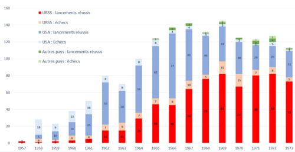

Début de la course à l'espace
La course à l'espace a commencé dans le contexte de la Guerre froide, une période de tensions géopolitiques entre les États-Unis et l'Union soviétique. Cette compétition a marqué une avancée technologique et scientifique majeure.
